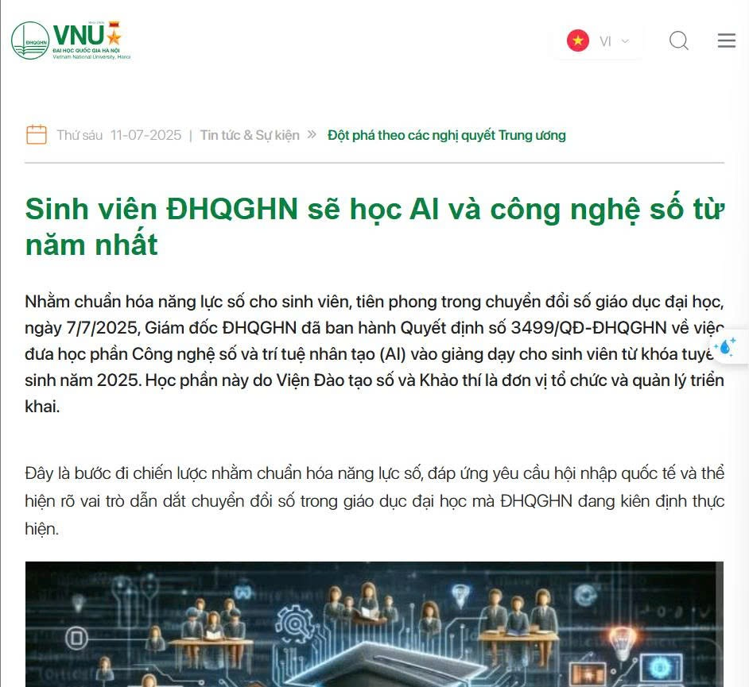
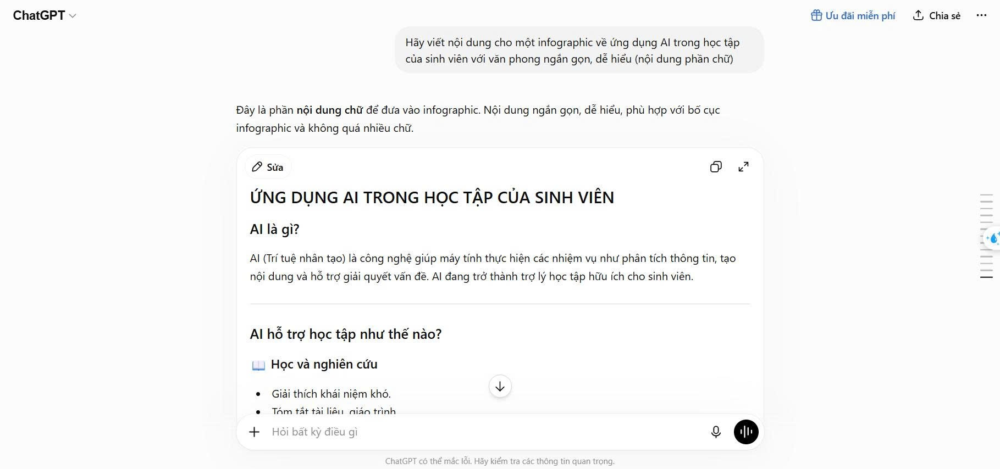
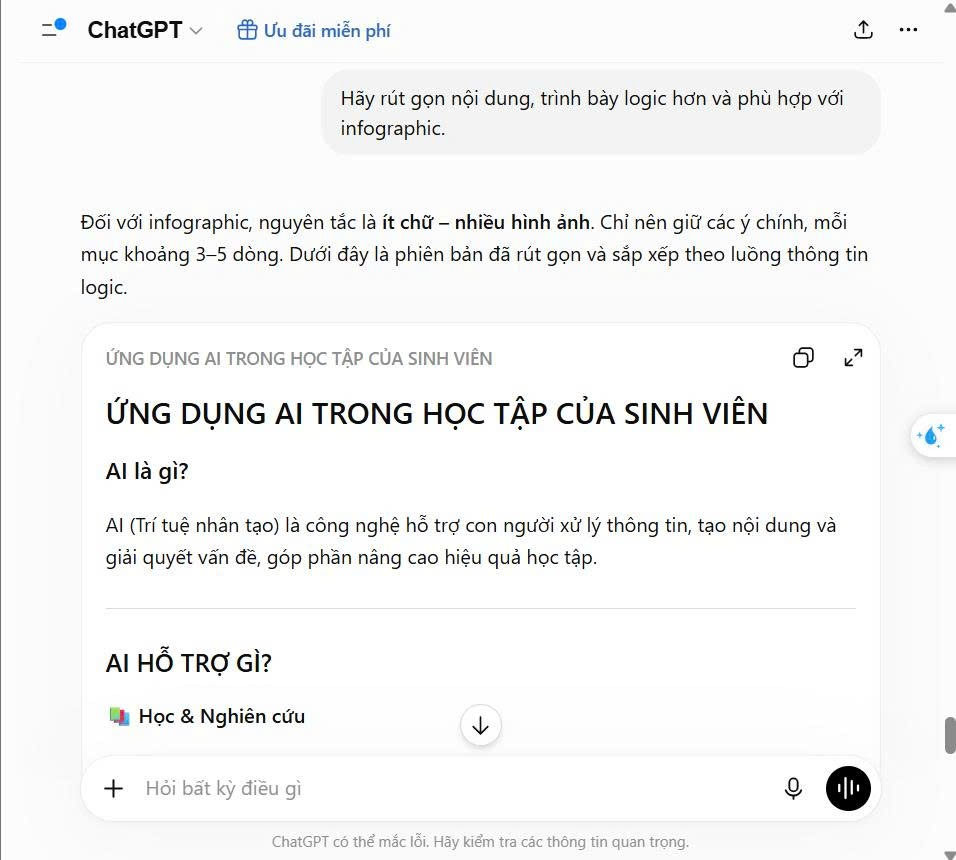
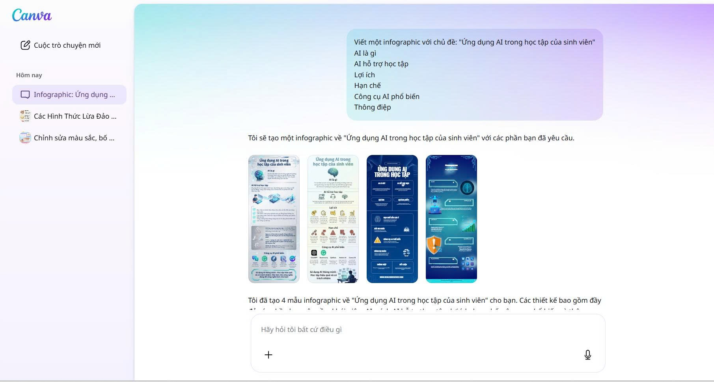
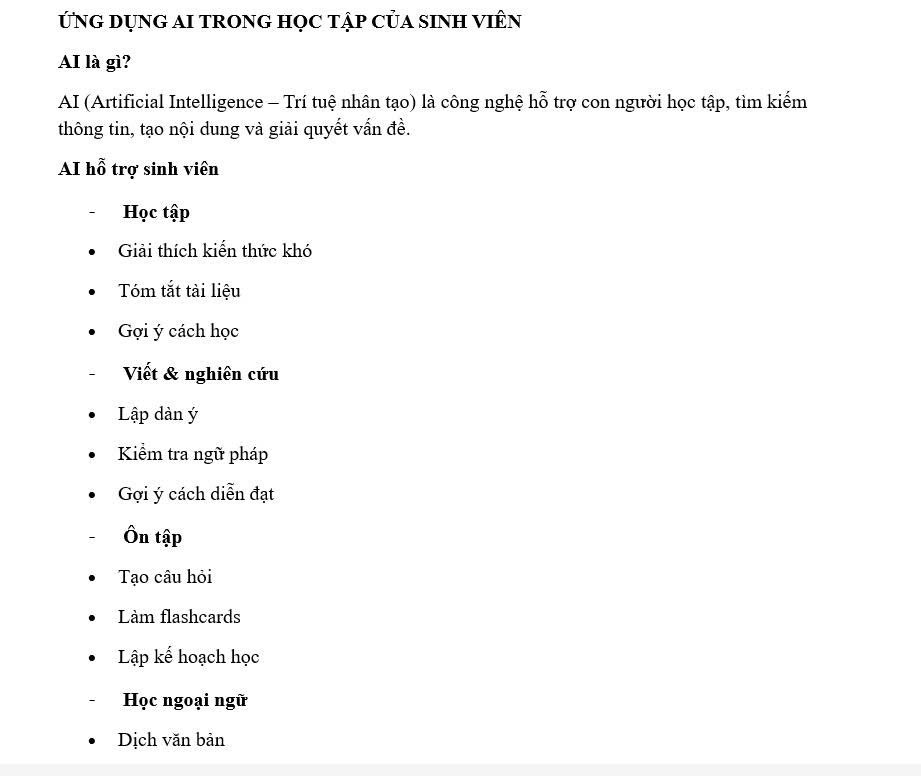
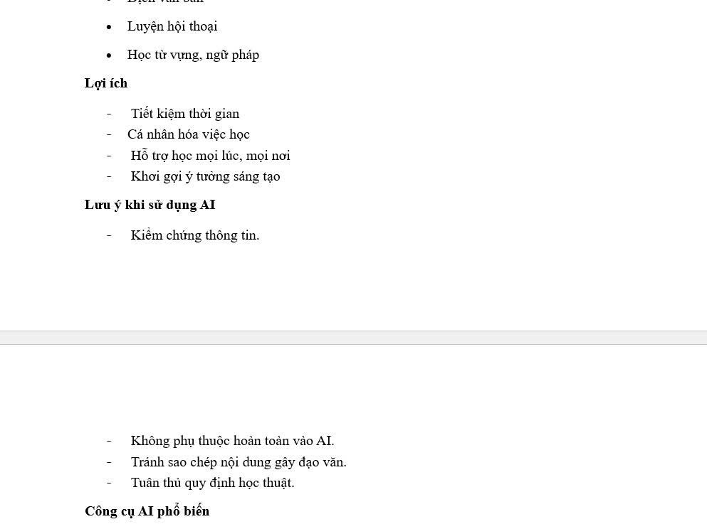
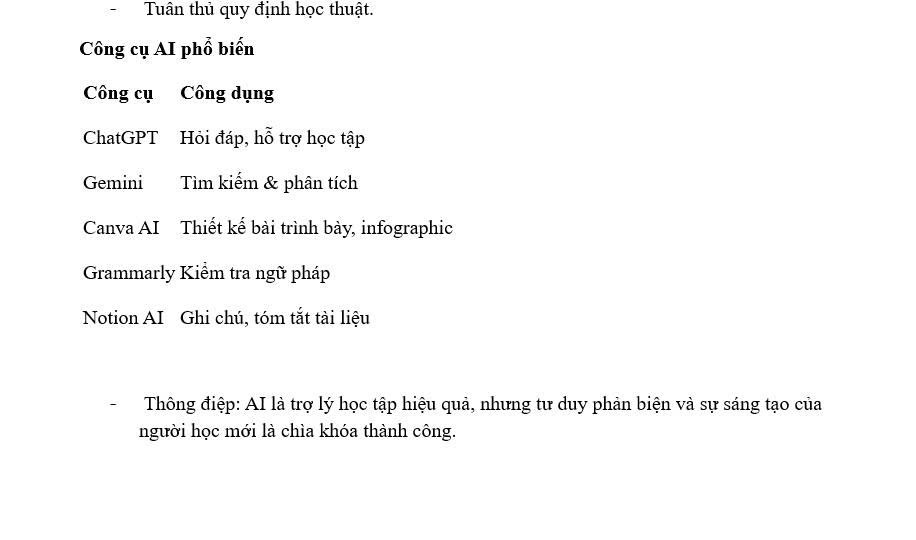
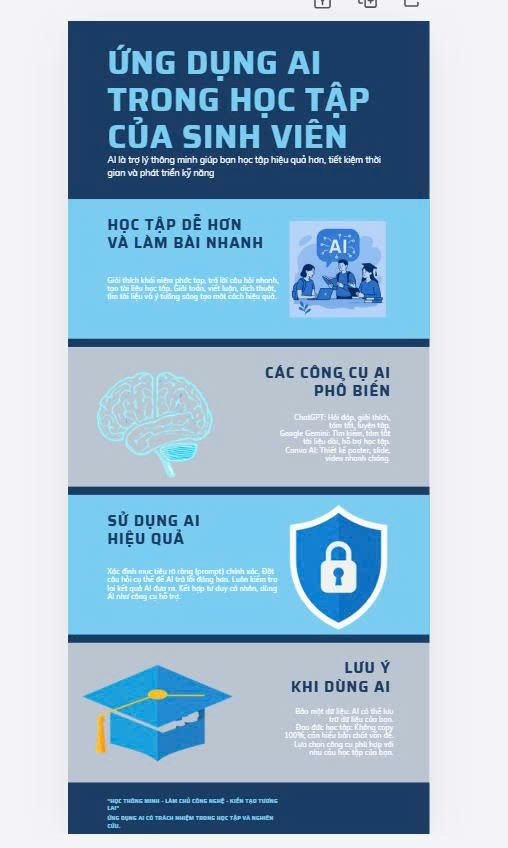
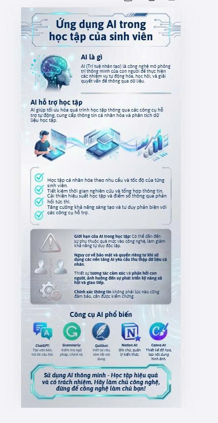

Mục tiêu bài
Xây dựng bộ nguyên tắc cá nhân khi sử dụng AI trong học tập, dựa trên chính sách của ĐHQGHN, nhằm đảm bảo tính an toàn, minh bạch và liêm chính học thuật.
📎 Sản phẩm bài tập (PDF)
Dán link file PDF sản phẩm Bài 6 của bạn vào nút bên cạnh
Theo định hướng của ĐHQGHN, AI được xem là công cụ hỗ trợ hoạt động học tập, nghiên cứu và giảng dạy. Nhà trường khuyến khích sinh viên khai thác AI nhằm nâng cao hiệu quả học tập nhưng không được sử dụng AI để gian lận học thuật hoặc thay thế hoàn toàn quá trình tư duy của người học. Đồng thời, sinh viên cần minh bạch khi sử dụng AI, kiểm chứng thông tin và tuân thủ các quy định về đạo đức nghiên cứu.
Các điểm chính:
Chính sách này không cấm AI mà hướng sinh viên sử dụng AI một cách có trách nhiệm. Đây là xu hướng phù hợp với nhiều trường đại học trên thế giới, giúp tận dụng lợi ích của AI nhưng vẫn đảm bảo tính trung thực học thuật.
Nguồn bài viết: vnu.edu.vn/sinh-vien-dhqghn-se-hoc-ai-va-cong-nghe-so-tu-nam-nhat-post38469.html

+ Prompt 1: Hãy viết nội dung cho một infographic về ứng dụng AI trong học tập của sinh viên với văn phong ngắn gọn, dễ hiểu.

+ Prompt 2: Hãy rút gọn nội dung, trình bày logic hơn và phù hợp với infographic.

+ Quá trình chỉnh sửa: Sau khi nhận nội dung từ AI, mình đã:
Khoảng 60% nội dung ban đầu do AI hỗ trợ, còn 40% là chỉnh sửa, lựa chọn và thiết kế của bản thân.
+ Minh bạch việc sử dụng AI
AI được sử dụng:

Ví dụ trích dẫn: Một phần nội dung của infographic được xây dựng với sự hỗ trợ của ChatGPT (OpenAI). Nội dung đã được người thực hiện kiểm chứng, chỉnh sửa và chịu trách nhiệm hoàn toàn.
AI nên được xem là công cụ hỗ trợ thay vì thay thế người học. Việc dùng AI để tìm ý tưởng, giải thích kiến thức hoặc kiểm tra ngữ pháp là phù hợp. Tuy nhiên, nếu sao chép toàn bộ nội dung AI tạo ra và nộp như sản phẩm của mình thì đó là hành vi gian lận học thuật. Do đó, sinh viên cần đảm bảo rằng sản phẩm cuối cùng phản ánh sự hiểu biết và đóng góp của bản thân.
Nội dung AI tạo ra có thể dựa trên nhiều nguồn dữ liệu khác nhau nên đôi khi chứa thông tin không chính xác hoặc tương đồng với tài liệu đã xuất bản.
Vì vậy:
Điều này giúp bảo đảm tính trung thực và tôn trọng quyền sở hữu trí tuệ.
AI giúp:
Tuy nhiên, nếu quá phụ thuộc, sinh viên sẽ giảm khả năng:
Do đó, AI chỉ nên đóng vai trò là "trợ lý", còn tư duy vẫn thuộc về người học.
SỬ DỤNG AI CÓ TRÁCH NHIỆM TRONG HỌC THUẬT
AI là công cụ hỗ trợ
Không nên
Luôn ghi nhớ
Thông điệp: AI giúp bạn học tốt hơn, nhưng không thể thay thế tư duy, sự sáng tạo và trách nhiệm của chính bạn.
Sửa lại nội dung:



Bản nháp:

Bản hoàn thiện:
